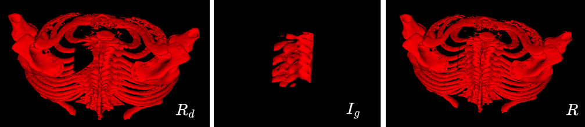

RibCageImp: A Deep Learning Framework for 3D Ribcage Implant Generation

Abstract
The recovery of damaged or resected ribcage structures requires precise, custom-designed implants to restore the integrity and functionality of the thoracic cavity. Traditional implant design methods rely mainly on manual processes, making them time-consuming and susceptible to variability. In this work, we explore the feasibility of automated ribcage implant generation using deep learning. We present a framework based on 3D U-Net architecture that processes CT scans to generate patient-specific implant designs. To the best of our knowledge, this is the first investigation into automated thoracic implant generation using deep learning approaches. Our preliminary results, while moderate, highlight both the potential and the significant challenges in this complex domain. These findings establish a foundation for future research in automated ribcage reconstruction and identify key technical challenges that need to be addressed for practical implementation.
Problem Statement
Let R represent the ribcage, and Rd be a portion of the ribcage with a defect created by a removed section due to fracture or surgical resection.
Let Ig represent the ground truth implant corresponding to the removed portion.
Objective: To generate a 3D implant Ip that, when combined with Rd, reconstructs the complete ribcage \(\hat{R}\). Mathematically:
\[\hat{R} = R_d + I_p\]
Challenge: Find Ip so that \(\hat{R}\) closely matches the original ribcage R. The problem can be formalized as:
\[\min_{R_d} \mathcal{L}(I_g, I_p) \quad subject \quad to \quad \hat{R} = R_d + I_p\]
Here, \(\mathcal{L}\) is a loss function evaluating similarity between predicted implant Ip and ground truth implant Ig.
Data Prepration

Results

BibTex
@misc{https://doi.org/10.48550/arxiv.2411.09204,
doi = {10.48550/ARXIV.2411.09204},
url = {https://arxiv.org/abs/2411.09204},
author = {Chaubey, Gyanendra and Farooq, Aiman and Singh, Azad and Mishra, Deepak},
title = {RibCageImp: A Deep Learning Framework for 3D Ribcage Implant Generation},
publisher = {arXiv},
year = {2024}
Acknowledgment
This research used data from the MICCAI 2020 RibFrac Challenge: Rib Fracture Detection and Classification. We would like to acknowledge the organizers for providing this valuable dataset.